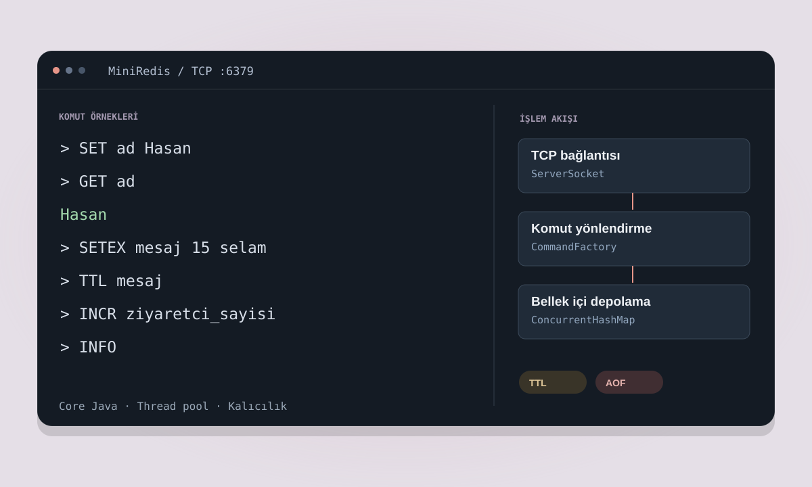
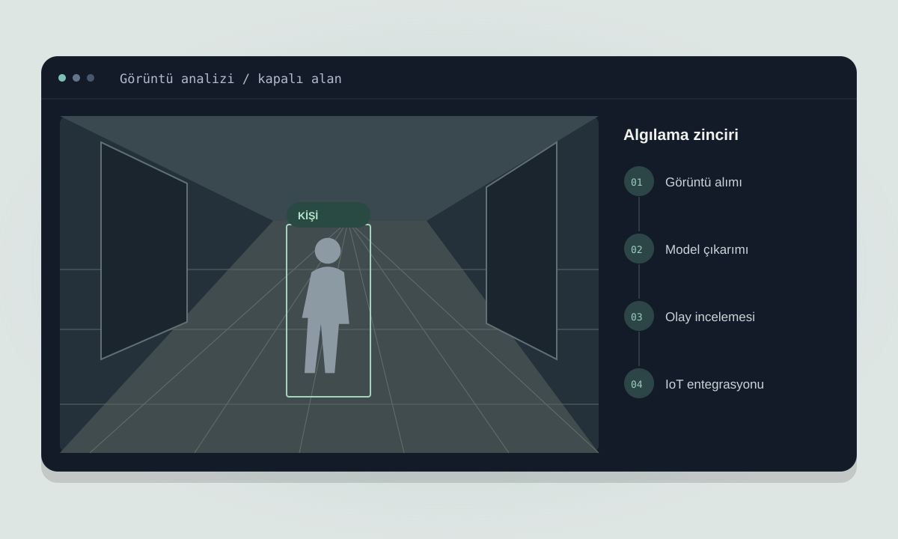
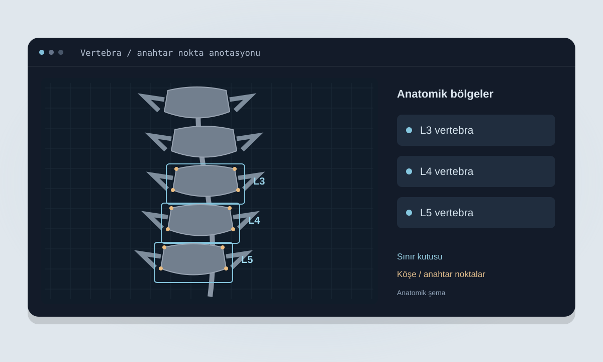
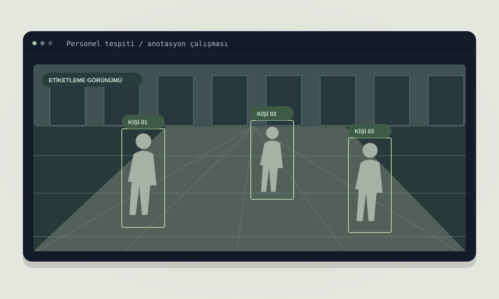
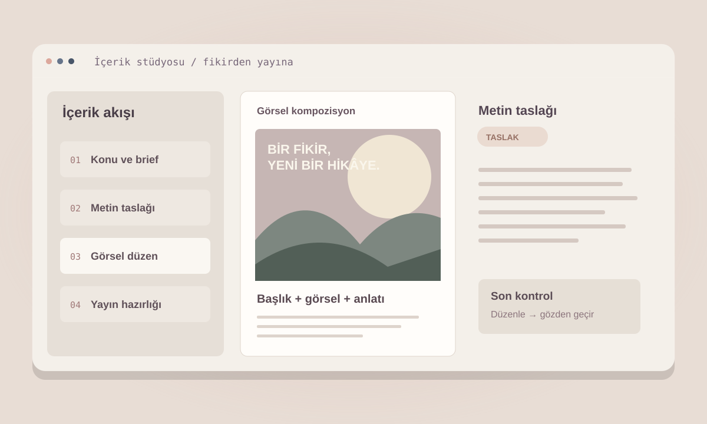
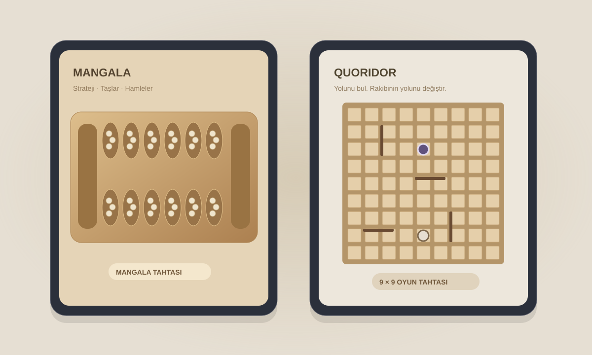

Temsili çalışma görünümü
Temsili çalışma görünümüAfet sonrası ihtiyaç önceliklendirme
Afet ihtiyaçlarını kategori ve aciliyet düzeyine göre değerlendiren sistemin mikroservis mimarisini kurdum ve modelini eğittim.
Ayrıntıyı görSEÇİLİ ÇALIŞMALAR VE DENEYLER
Yapay zekâ modelleri, bellek içi sistemler, bilgisayarlı görü çalışmaları ve uygulamalar. Her birinde ne yaptığımı açıkça anlattım.
Temsili çalışma görünümüAfet ihtiyaçlarını kategori ve aciliyet düzeyine göre değerlendiren sistemin mikroservis mimarisini kurdum ve modelini eğittim.
Ayrıntıyı gör
GitHub README · komut örnekleriRedis mimarisinden ilham alan, hafif ve bellek içinde çalışan anahtar değer depolama sistemi.
Ayrıntıyı gör Temsili moderasyon akışı
Temsili moderasyon akışıSosyal medya metinlerinde saldırgan ve toksik ifadelerin sınıflandırılması için veri hazırlama, model eğitimi ve değerlendirme.
Ayrıntıyı gör
Temsili sistem görünümüDonanım, IoT ve yapay zekâ bileşenlerini birleştiren TÜBİTAK 2209-A araştırma projesi. Tamamlandı.
Ayrıntıyı gör
Temsili anotasyon şemasıL3, L4 ve L5 vertebralarıyla anatomik anahtar noktaların belirlenmesine yönelik devam eden çalışma.
Ayrıntıyı gör
Temsili anotasyon görünümüEkip çalışmasında veri etiketleme ve tespit sürecine katkı sağladım. Kamera entegrasyonu ve test aşamaları bekleniyor.
Ayrıntıyı gör
Temsili içerik akışıKonuya uygun görsel ve metin hazırlayan, içeriği seçilen tasarıma uyarlayıp platformda yayınlama akışı sunan uygulama.
Ayrıntıyı gör Temsili belge incelemesi
Temsili belge incelemesiRaporları analiz edip güçlü ve zayıf yönleri belirleyen, geliştirme önerileri sunan araç.
Ayrıntıyı gör
Temsili oyun görünümüMangala ve Quoridor mobil oyunlarını geliştirdim; görsel tasarım, sesler ve oynanış bileşenlerini bir araya getirdim.
Ayrıntıyı gör